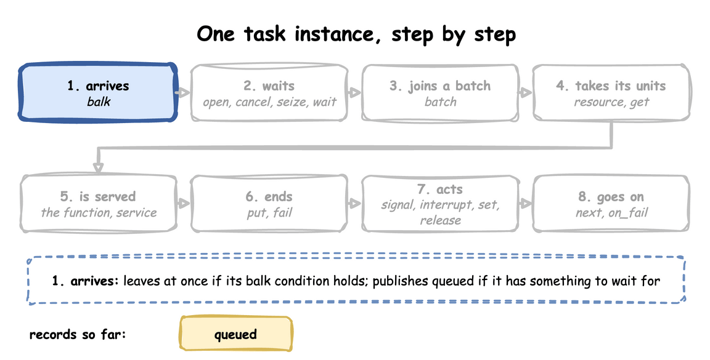

Tasks and Processes
This page is the map of the section: what a task and a process are, and which page shows what.
What It Is
A task is what one entity does: an order being packed, a return being logged. A process is anything else that runs over time: packers going on a break every hour, a speed that drifts, a shift plan. Both are SimPy generators, functions that yield to wait. The builder and YAML write the common ones for you, and the low-level API writes them by hand.
Pages in This Section
- Tasks: write a task, its keys, how an order leaves the line, what a task does when it is interrupted, what
run()does and what a task does step by step. - Processes: run work alongside the tasks that belongs to no entity.
- Signals and Waiting: wait for signals, conditions and child flows, start flows, and run actions when an event happens.
- Failures: when a task fails, what a failure does, and what happens to one nobody handles.
How to Use It
Pick the page by the job:
| To do this | Read |
|---|---|
| Write the work one order does, and the records it publishes | Tasks |
| Let an order give up waiting, or turn it away | Tasks |
| Choose what an order does after a task | Task Flow |
| Run a break, a drift or a schedule | Processes |
| Make a task wait for another task, a signal or a time | Signals and Waiting |
| Handle a task that cannot finish | Failures |
How It Works
run() builds the environment, registers the parameters, builds the resources, stores and containers, and starts the arrivals and processes. What run() Does lists the steps in order, and What @app.task Does lists the steps of one task.
The diagram follows one task instance through its eight steps. Watch the box with the thick outline move along the steps, and the records it has published grow underneath.

Each box names the keys that act at that step. A step whose keys the task does not set passes at once: a task with no wait does not wait, and a task with no batch joins no batch. The instance publishes queued when it has something to wait for: a resource, a get, a wait, a seize or a batch. It publishes started before its work, and finished or failed when it ends. A balk ends it at the first step with balked, and a renege ends it while it waits with reneged. The last step starts the next task as a new instance for the same entity, in the same SimPy process.